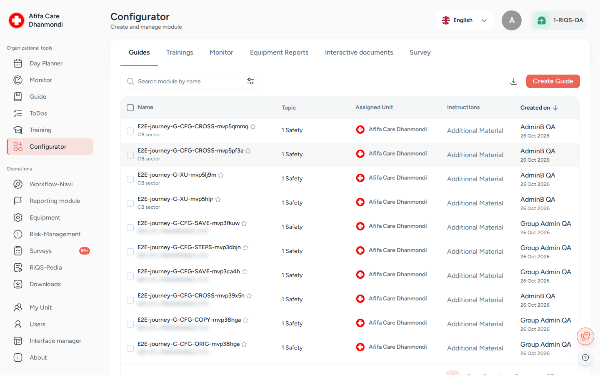

Configurator¶
In one sentence: The workshop where admins and unit leads build the reusable content that other modules run: guides, trainings, control task lists, equipment reports, interactive documents and surveys. Menu: Configurator · Status: Live

Configurator: one tab per template type (Guides, Trainings, Monitor, Equipment Reports, Interactive documents, Survey). Screens show test data.
What it is¶
Many RIQS modules need ready-made content. A process guide needs its steps. A training needs its questions. A maintenance job needs a report form. A survey needs its questionnaire. The Configurator is where all these templates are made, kept and looked after.
Think of it as the unit's template cupboard. You build a template once, decide which organisations and units may use it, and from then on people use it in the daily modules: they follow the guide in Process Guide, take the training in Training, and so on. When something changes, you update the template here.
You open it with Configurator in the left menu. Older documents call it "Forms" or the "Module creator". It has six tabs, one per kind of template: Guides, Trainings, Monitor, Equipment Reports, Interactive documents and Survey.
Professionals do not use the Configurator. They only use what is built here.
Key terms¶
| Term | Meaning |
|---|---|
| Module | In this page, one template you build: a guide, a training, a monitor, a report, a document or a survey. |
| Guide | A step-by-step procedure with sections and tasks. Used in Process Guide and attached to shifts. |
| Training | A learning unit with multiple-choice questions and a pass mark. Used in Training. |
| Monitor (control task list) | A list of control tasks, for example with a rating scale. Used in Monitoring. |
| Equipment report | A report template filled in during equipment maintenance. Used in Equipment. |
| Interactive document | A form people fill in online. See Interactive documents. |
| Survey | A questionnaire template. Used in Surveys. |
| Sector and Topic | Labels that sort guides, trainings and monitors. Both are required. |
| Availability | The organisations and units that may use a template. You can choose single units or all units of an organisation. |
| Qualification | The pass mark of a training, as a percentage from 0 to 100. |
| Drafted / Published | The two states of a report, document or survey template. A draft can still change. A published template is in use. |
| Version | Each change to a published template creates a new version. Older versions stay viewable. |
Who uses it¶
| Role | What they typically do here |
|---|---|
| RiQS Administrator | Builds and maintains templates for any organisation. Can delete in audit-safe mode. |
| Group Administrator | Builds templates for the organisations in the group and shares them across units. |
| Administrator | Builds templates for the organisation and its units. |
| Power User | Builds and maintains templates for their own unit. |
| Management | Builds and maintains templates for their own unit. |
| Professional | Does not open the Configurator. Uses the finished templates in other modules. |
How it works¶
Guides, trainings and monitors
- Create. Click Create Guide, Create Training or Create Monitor. Fill in the details and the content.
- Share. Choose the organisations and units that may use it.
- Save. It appears in the list and can be used straight away in the matching module.
- Maintain. Preview, edit, copy, deactivate or delete it from the row menu (⋮).
Equipment reports, interactive documents and surveys
Drafted → Published → (edit) → new version
- Create. Click Create Report, Create Document or Create Survey. A builder opens.
- Build. Set the layout (cover page, table of contents, deviation overview). Add sections and content: headlines, text, images, tables, system data, summaries, signatures, attachments, deviations. Add questions: multiple choice, rating scale, Likert scale, open text, dropdown, ranking, yes/no and date.
- Save as draft. The template is Drafted. You can still change it.
- Approve. Use Approve on the draft. It becomes Published and can be used.
- Change later. Editing a published template creates a new version.
Filled-in reports based on these templates have their own statuses (for example Pending, Generated, Partially Approved, Approved, Signed). These are described on the module pages that use them.
How to …¶
How to find a template¶
Who can do this: RiQS Administrator, Group Administrator, Administrator, Power User, Management 1. Click Configurator in the left menu. 2. Choose a tab, for example Trainings. 3. Type in the search field, or open the filter to narrow the list (for example by status, unit or tag).
Result: The list shows matching templates with title, status, unit and dates.
How to create a guide¶
Who can do this: RiQS Administrator, Group Administrator, Administrator, Power User, Management 1. On the Guides tab, click Create Guide. 2. Enter the Sector, the title, the Topic and an optional description. 3. Choose where it is available: one or more organisations and units, or all units of an organisation. 4. Add sections and tasks. Attach files or forms if needed. 5. Click Save.
Result: The guide is listed on the Guides tab and can be used in the Process Guide and attached to shifts in the Shift Plan.
How to create a training¶
Who can do this: RiQS Administrator, Group Administrator, Administrator, Power User, Management 1. On the Trainings tab, click Create Training. 2. Fill in the training information: title, sector, topic, description, the Qualification (pass mark, 0–100) and any files. 3. Add at least one question. Each question needs answer options and at least one correct answer. 4. Click Save.
Result: The training is listed and can be assigned in Training.
How to create a monitor (control task list)¶
Who can do this: RiQS Administrator, Group Administrator, Administrator, Power User, Management, if the unit has the Monitoring module 1. On the Monitor tab, click Create Monitor. 2. Fill in the details and availability. 3. Add the control tasks, for example a rating scale with from, to and step values. 4. Click Save.
Result: The list can be used in Monitoring.
How to build and publish a report, document or survey¶
Who can do this: RiQS Administrator, Group Administrator, Administrator; Power User and Management only at unit level 1. Open Equipment Reports, Interactive documents or Survey. 2. Click Create Report, Create Document or Create Survey. 3. Build the layout, sections and questions. Use Preview to check it. 4. Save it as a draft. 5. When it is ready, open the row menu (⋮) and click Approve.
Result: The template is Published and ready to use.
How to preview, edit, copy or delete a template¶
Who can do this: see Who can do what 1. Find the template and open the row menu (⋮) in the Action column. 2. Choose Preview, Edit, Copy or Delete. 3. For interactive documents you can also choose Upload to RiQS-Pedia (not for drafts).
Result: - Copy creates a new, separate template. Report, document and survey templates can only be copied once published, and only if your unit is on the template. - Edit of a published report, document or survey creates a new version. - Delete removes the template, if it is not in use (see Rules).
How to delete several templates and download a list¶
Who can do this: see Who can do what 1. On Guides, Trainings or Monitor, tick the templates you want to delete. Only templates you may delete can be ticked. 2. Click the delete button and confirm. 3. To download a report of the list, use the download button.
Result: The selected templates are removed. The download gives you the list as a file.
Rules to know¶
- Templates in use cannot be deleted. A guide, training or monitor that is still used by active guides, trainings or tasks cannot be selected for deletion. Deactivate it instead, or end its use first.
- Who can delete what: RiQS Administrators, Group Administrators and Administrators can delete any guide, training or monitor. Power Users and Management can delete only the ones they created themselves.
- Editing guides, trainings and monitors made by others: RiQS Administrators, Group Administrators, Administrators and Power Users can edit those created by people below them (subordinate persons). Management can edit only their own.
- Creating guides depends on the unit: guide creation must be switched on for the unit (RiQS Administrators are not limited by this).
- Creating monitors needs the Monitoring module in the unit's package.
- Power User and Management create report, document and survey templates only at unit level. Only administrator roles can share templates more widely.
- Field limits: the Sector is required (up to 100 characters); title and descriptions up to 1000 characters; a training needs at least one question with a correct answer.
- Audit-safe mode: only the RiQS Administrator can delete.
Who can do what¶
✅ allowed · ❌ not allowed · text = condition
Guides, trainings and monitors
| Action | RiQS Administrator | Group Administrator | Administrator | Power User | Management | Professional |
|---|---|---|---|---|---|---|
| Open the Configurator | ✅ | ✅ | ✅ | ✅ | ✅ | ❌ |
| Search, filter, preview, download reports | ✅ | ✅ | ✅ | ✅ | ✅ | ❌ |
| Create | ✅ | ✅ | ✅ | ✅ | ✅ | ❌ |
| Copy | ✅ | ✅ | ✅ | ✅ | ✅ | ❌ |
| Edit own templates | ✅ | ✅ | ✅ | ✅ | ✅ | ❌ |
| Edit templates created by subordinate persons | ✅ | ✅ | ✅ | ✅ | ❌ | ❌ |
| Delete own templates (regular version, not in use) | ✅ | ✅ | ✅ | ✅ | ✅ | ❌ |
| Delete templates made by others (regular version, not in use) | ✅ | ✅ | ✅ | ❌ | ❌ | ❌ |
| Deactivate | ✅ | ✅ | ✅ | ✅ | ✅ | ❌ |
| Work across units | ✅ | ✅ | ✅ | ❌ | ❌ | ❌ |
| Delete in audit-safe mode | ✅ | ❌ | ❌ | ❌ | ❌ | ❌ |
Equipment reports, interactive documents and surveys
| Action | RiQS Administrator | Group Administrator | Administrator | Power User | Management | Professional |
|---|---|---|---|---|---|---|
| Create, edit template or draft, approve (publish) a draft | ✅ | ✅ | ✅ | Only at unit level | Only at unit level | ❌ |
| Edit a published template (new version) | ✅ | ✅ | ✅ | Only at unit level | Only at unit level | ❌ |
| Preview | ✅ | ✅ | ✅ | ✅ | ✅ | ❌ |
| Copy (creates a new template) | ✅ | ✅ | ✅ | ✅ | ✅ | ❌ |
| Delete (regular version) | ✅ | ✅ | ✅ | ✅ | ✅ | ❌ |
| Deactivate | ✅ | ✅ | ✅ | ✅ | ✅ | ❌ |
| Upload an interactive document to RiQS-Pedia | ✅ | ✅ | ✅ | ✅ | ✅ | ❌ |
| Delete in audit-safe mode | ✅ | ❌ | ❌ | ❌ | ❌ | ❌ |
Connected modules¶
- Process Guide: uses the guides.
- Training: uses the trainings.
- Monitoring: uses the monitors (control task lists).
- Equipment: uses the equipment reports during maintenance.
- Interactive documents and RiQS-Pedia: interactive documents can be uploaded to the library.
- Surveys: uses the survey templates.
- Shift Plan: shifts and checklists can carry guides and forms from here.
- Organisation & units: unit settings decide which templates can be created.
Open questions¶
- Management editing others' templates: the feature list ("shared editing rights") says Management can edit content made by Administrators and Power Users; the role sheet says No. This page follows the role sheet. Please confirm.
- "Use template" copies of guides do not appear in the Configurator list. Who should see and clean them up?
- Deleting a template "with active elements": the feature list mentions "the configured deletion logic". Today such templates cannot be deleted at all. Is that the intended rule?
Last reviewed: 2026-10-26